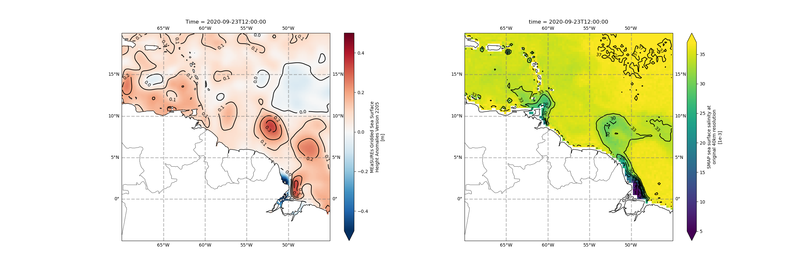
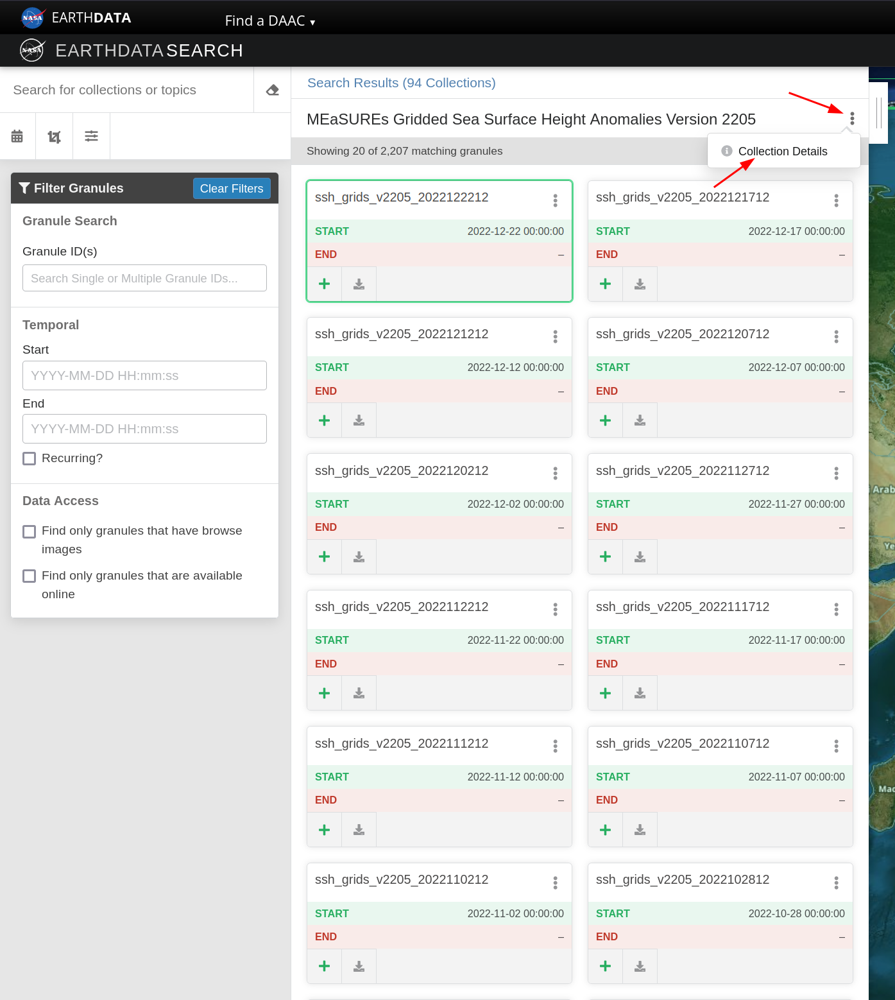

Data access via earthaccess library and vizualization with cartopy#
Overview#
Within this notebook, we will cover:
How to search data via Earthdata Search web application
How to access NASA Earth Science data via
earthaccessHow to subset, set attributes and modify coordinates for
xarrayDatasetsHow to visualize data with
hvplotandcartopyHow to download data
Prerequisites#
Concepts |
Importance |
Notes |
|---|---|---|
Necessary |
Data and metadata structure |
|
Helpful |
Data and metadata structure |
|
Helpful |
Familiarity with plots |
|
Helpful |
Familiarity with maps |
Time to learn: 30 minutes
Imports#
import warnings
warnings.simplefilter('ignore')
warnings.filterwarnings('ignore')
import earthaccess
import xarray as xr
import hvplot.xarray
import numpy as np
import matplotlib.pyplot as plt
from cartopy import crs as ccrs, feature as cfeature
Sea surface height anomaly#
Let’s look for some sea surface height anomaly data for the Western Tropical Atlantic. In order to access it, we will use the earthaccess python library. It is used to make it easier for the user to find, stream and download NASA Earth Science data. More information about this library can be found in their documentation page and Github repository.
Registering for an Earthdata account and authenticating#
Before searching for data, it is necessary to register for an Earthdata login profile, which can be done easily and quickly this way.
After registering, earthaccess has to authenticate you as a user. There are a few ways to do that, as stated here. The easiest way of doing is just executing auth = earthaccess.login() in your jupyter notebook, and that would prompt for input of the username and password for the user.
For the purposes of this demonstration we have environment variables that will be used for authentication. So you just need to execute the cell below:
auth = earthaccess.login(strategy="environmnent")
After it is authenticated, we are ready to start our search for data!
Searching and accessing the data#
earthaccess allows us to look for datasets (called DataCollections) and specific data files (called DataGranules). To look for them, we need some criteria in order to perform the search. Here we will use
a shortname, which is a dataset identifier;
a temporal window: we want data between those dates; and
a bounding box: we want data within that area.
One good way to get a better understanding of what to look for is visiting the Earthdata Search website. There you can search by keywords and select filters to see which data could be helpful in your research. Once you find a dataset (Collection) that interests you, you click on its name. Below we show an example in which the “MEaSUREs Gridded Sea Surface Height Anomalies Version 2205” is the dataset of interest.

After clicking on the dataset name, you click on Collection Details, which will send you to a page that has more information about the dataset.

Feel free to read the details about the dataset, to make sure that’s what would help you in your work. If so, copy the name, usually all in caps, that is shown inside a light gray box on the top of the page. That is the identifier for that specific dataset. That’s the main information we’ll need to provide earthaccess library to search for it.

Now that we have an identifier for the dataset we want to access, let’s use earthaccess to find sea surface height anomaly data in September and October, 2020, in the Western Tropical Atlantic:
# specify the bounding box for the Western Tropical Atlantic
lonmin, latmin, lonmax, latmax = -70, -5, -45, 20
# https://search.earthdata.nasa.gov/search/granules/collection-details?p=C2270392799-POCLOUD&pg%5B0%5D%5Bv%5D=f&pg%5B0%5D%5Bgsk%5D=-start_date&as%5Bscience_keywords%5D%5B0%5D=Oceans%3ASea%20Surface%20Topography%3ASea%20Level%3ASea%20Level%20Anomaly&tl=1718059227%213%21%21&fsm0=Sea%20Surface%20Topography&fst0=Oceans&fst1=Oceans&fsm1=Sea%20Surface%20Topography&fs11=Sea%20Level&fs21=Sea%20Level%20Anomaly&fpb0=Space-based%20Platforms&long=-0.0703125
sla_shortname = "SEA_SURFACE_HEIGHT_ALT_GRIDS_L4_2SATS_5DAY_6THDEG_V_JPL2205"
sla_results = earthaccess.search_data(
short_name=sla_shortname,
cloud_hosted=True,
temporal=("2020-09-01", "2020-10-30"),
bounding_box=(lonmin, latmin, lonmax, latmax)
)
---------------------------------------------------------------------------
KeyboardInterrupt Traceback (most recent call last)
Cell In[3], line 7
4 # https://search.earthdata.nasa.gov/search/granules/collection-details?p=C2270392799-POCLOUD&pg%5B0%5D%5Bv%5D=f&pg%5B0%5D%5Bgsk%5D=-start_date&as%5Bscience_keywords%5D%5B0%5D=Oceans%3ASea%20Surface%20Topography%3ASea%20Level%3ASea%20Level%20Anomaly&tl=1718059227%213%21%21&fsm0=Sea%20Surface%20Topography&fst0=Oceans&fst1=Oceans&fsm1=Sea%20Surface%20Topography&fs11=Sea%20Level&fs21=Sea%20Level%20Anomaly&fpb0=Space-based%20Platforms&long=-0.0703125
5 sla_shortname = "SEA_SURFACE_HEIGHT_ALT_GRIDS_L4_2SATS_5DAY_6THDEG_V_JPL2205"
----> 7 sla_results = earthaccess.search_data(
8 short_name=sla_shortname,
9 cloud_hosted=True,
10 temporal=("2020-09-01", "2020-10-30"),
11 bounding_box=(lonmin, latmin, lonmax, latmax)
12 )
File ~/miniconda3/envs/cookbook-dev/lib/python3.10/site-packages/earthaccess/api.py:138, in search_data(count, **kwargs)
136 else:
137 query = DataGranules().parameters(**kwargs)
--> 138 granules_found = query.hits()
139 logger.info(f"Granules found: {granules_found}")
140 if count > 0:
File ~/miniconda3/envs/cookbook-dev/lib/python3.10/site-packages/earthaccess/search.py:460, in DataGranules.hits(self)
447 """Returns the number of hits the current query will return.
448
449 This is done by making a lightweight query to CMR and inspecting the returned
(...)
456 RuntimeError: The CMR query failed.
457 """
458 url = self._build_url()
--> 460 response = self.session.get(url, headers=self.headers, params={"page_size": 0})
462 try:
463 response.raise_for_status()
File ~/miniconda3/envs/cookbook-dev/lib/python3.10/site-packages/requests/sessions.py:602, in Session.get(self, url, **kwargs)
594 r"""Sends a GET request. Returns :class:`Response` object.
595
596 :param url: URL for the new :class:`Request` object.
597 :param \*\*kwargs: Optional arguments that ``request`` takes.
598 :rtype: requests.Response
599 """
601 kwargs.setdefault("allow_redirects", True)
--> 602 return self.request("GET", url, **kwargs)
File ~/miniconda3/envs/cookbook-dev/lib/python3.10/site-packages/requests/sessions.py:589, in Session.request(self, method, url, params, data, headers, cookies, files, auth, timeout, allow_redirects, proxies, hooks, stream, verify, cert, json)
584 send_kwargs = {
585 "timeout": timeout,
586 "allow_redirects": allow_redirects,
587 }
588 send_kwargs.update(settings)
--> 589 resp = self.send(prep, **send_kwargs)
591 return resp
File ~/miniconda3/envs/cookbook-dev/lib/python3.10/site-packages/requests/sessions.py:703, in Session.send(self, request, **kwargs)
700 start = preferred_clock()
702 # Send the request
--> 703 r = adapter.send(request, **kwargs)
705 # Total elapsed time of the request (approximately)
706 elapsed = preferred_clock() - start
File ~/miniconda3/envs/cookbook-dev/lib/python3.10/site-packages/requests/adapters.py:667, in HTTPAdapter.send(self, request, stream, timeout, verify, cert, proxies)
664 timeout = TimeoutSauce(connect=timeout, read=timeout)
666 try:
--> 667 resp = conn.urlopen(
668 method=request.method,
669 url=url,
670 body=request.body,
671 headers=request.headers,
672 redirect=False,
673 assert_same_host=False,
674 preload_content=False,
675 decode_content=False,
676 retries=self.max_retries,
677 timeout=timeout,
678 chunked=chunked,
679 )
681 except (ProtocolError, OSError) as err:
682 raise ConnectionError(err, request=request)
File ~/miniconda3/envs/cookbook-dev/lib/python3.10/site-packages/urllib3/connectionpool.py:787, in HTTPConnectionPool.urlopen(self, method, url, body, headers, retries, redirect, assert_same_host, timeout, pool_timeout, release_conn, chunked, body_pos, preload_content, decode_content, **response_kw)
784 response_conn = conn if not release_conn else None
786 # Make the request on the HTTPConnection object
--> 787 response = self._make_request(
788 conn,
789 method,
790 url,
791 timeout=timeout_obj,
792 body=body,
793 headers=headers,
794 chunked=chunked,
795 retries=retries,
796 response_conn=response_conn,
797 preload_content=preload_content,
798 decode_content=decode_content,
799 **response_kw,
800 )
802 # Everything went great!
803 clean_exit = True
File ~/miniconda3/envs/cookbook-dev/lib/python3.10/site-packages/urllib3/connectionpool.py:534, in HTTPConnectionPool._make_request(self, conn, method, url, body, headers, retries, timeout, chunked, response_conn, preload_content, decode_content, enforce_content_length)
532 # Receive the response from the server
533 try:
--> 534 response = conn.getresponse()
535 except (BaseSSLError, OSError) as e:
536 self._raise_timeout(err=e, url=url, timeout_value=read_timeout)
File ~/miniconda3/envs/cookbook-dev/lib/python3.10/site-packages/urllib3/connection.py:516, in HTTPConnection.getresponse(self)
513 _shutdown = getattr(self.sock, "shutdown", None)
515 # Get the response from http.client.HTTPConnection
--> 516 httplib_response = super().getresponse()
518 try:
519 assert_header_parsing(httplib_response.msg)
File ~/miniconda3/envs/cookbook-dev/lib/python3.10/http/client.py:1375, in HTTPConnection.getresponse(self)
1373 try:
1374 try:
-> 1375 response.begin()
1376 except ConnectionError:
1377 self.close()
File ~/miniconda3/envs/cookbook-dev/lib/python3.10/http/client.py:318, in HTTPResponse.begin(self)
316 # read until we get a non-100 response
317 while True:
--> 318 version, status, reason = self._read_status()
319 if status != CONTINUE:
320 break
File ~/miniconda3/envs/cookbook-dev/lib/python3.10/http/client.py:279, in HTTPResponse._read_status(self)
278 def _read_status(self):
--> 279 line = str(self.fp.readline(_MAXLINE + 1), "iso-8859-1")
280 if len(line) > _MAXLINE:
281 raise LineTooLong("status line")
File ~/miniconda3/envs/cookbook-dev/lib/python3.10/socket.py:717, in SocketIO.readinto(self, b)
715 while True:
716 try:
--> 717 return self._sock.recv_into(b)
718 except timeout:
719 self._timeout_occurred = True
File ~/miniconda3/envs/cookbook-dev/lib/python3.10/ssl.py:1307, in SSLSocket.recv_into(self, buffer, nbytes, flags)
1303 if flags != 0:
1304 raise ValueError(
1305 "non-zero flags not allowed in calls to recv_into() on %s" %
1306 self.__class__)
-> 1307 return self.read(nbytes, buffer)
1308 else:
1309 return super().recv_into(buffer, nbytes, flags)
File ~/miniconda3/envs/cookbook-dev/lib/python3.10/ssl.py:1163, in SSLSocket.read(self, len, buffer)
1161 try:
1162 if buffer is not None:
-> 1163 return self._sslobj.read(len, buffer)
1164 else:
1165 return self._sslobj.read(len)
KeyboardInterrupt:
Info
Note: not all these arguments are necessary, but the more arguments you use, the more refined the search will be. More info here.The function search_data returns a list with the Granules found. Here we can think of Granules as files, or time-steps. Great, we found some that match our criteria. Now, let’s take a look at one of them:
dict(sla_results[0])
So here we have all the metadata information about this first Granule. You can also check all the Granules from the list, if you’d like to make sure they are all of interest to you:
sla_results
OK, we found some results that interest us. Now let’s access them!
Two possibly important limiting factors for research are limited computing capacity and limited data storage. Even if data storage is not very limited, unecessarily working with large files is not best practice. So here we’ll not download the data; we’ll stream it instead, using xarray. Through xarray we can take a look at the data, subset, perform some analyses and, only if we are certain that we want to look further into it, download the data.
So let’s start by opening the data Granules as a dataset with xarray. This can take some time, depending on your system.
%%time
sla_ds = xr.open_mfdataset(earthaccess.open(sla_results))
sla_ds
Subsetting the data, adjusting the coordinates and assigning attributes#
If we take a look at the loaded dataset, we notice a few things:
The search yielded 12 granules, so we have 12 time-steps in the resulting dataset
The
LatitudeandLongitudespan a much greater area than requested in the search. The dataset loaded contains the area that we requested, plus much more.we have a few data variables besides
SLA(Sea Level Anomaly Estimate)the
Longitudecoordinate goes from 0 to 360 instead of from -180 to 180.there are multiple attributes. Those are very important, since they contain dataset metadata information.
That being said, we need to do a few things to make this dataset ready for analysis, visualization, and/or download.
The first thing to do is to adjust the Longitude coordinates and sort the data accordingly:
# convert Longitude from 0-360 to -180-180
sla_ds.coords['Longitude'] = (sla_ds.coords['Longitude'] + 180) % 360 - 180
sla_ds = sla_ds.sortby(sla_ds.Longitude)
sla_ds
Now we can see that the dataset has Longitude values between -180 and 180. Great!
The next step is to subset the data - we don’t need SLA for the entire globe, just for the Western Tropical Atlantic, so there’s no need to be messing with large files. To subset the data, we leverage the power of slicing in xarray:
sla_subset = sla_ds['SLA'].sel(Latitude=slice(latmin, latmax), Longitude=slice(lonmin,lonmax))
sla_subset
This looks better, but in order for this to be the main object of analysis and for us to be able to delete the original dataset (spanning the entire global ocean), we need to make sure it has metadata information. In order to do that, we gather some attributes from the original dataset, remove the ones that don’t make sense after subsetting, and assign these attributes to the sla_subset DataArray:
# get attributes from the original Dataset
sla_attrs = sla_ds.attrs
del sla_ds
# remove some attributes
attrs_to_be_removed = ['geospatial_lat_min',
'geospatial_lat_max',
'geospatial_lon_min',
'geospatial_lon_max',
'time_coverage_start',
'time_coverage_end']
for attr in attrs_to_be_removed:
del sla_attrs[attr]
# assign attributes to DataArray
sla_subset = sla_subset.assign_attrs(sla_attrs)
# check that the new attributes are there
sla_subset.attrs
Great, now that we have data and metadata. Now, let’s take a quick look at the data for the few time-steps that we have loaded and see if they show any interesting features for us to investigate further. We can do that easily and interactively with hvplot:
sla_subset.hvplot.image(x='Longitude', y='Latitude', aspect="equal", cmap='RdBu_r', clim=(-0.4, 0.4), title="Sea Level Anomaly Estimate (m)")
After inspection, we decide that the data for Sept 23rd, 2020 looks promising. So let’s subset further, to have just this time-step in our DataArray:
date_selection = '2020-09-23'
sla_subset_plot = sla_subset.sel(Time=date_selection)
del sla_subset
sla_subset_plot
Note that the subsetted DataArray has all the attributes that we have assigned from the original dataset.
Sea Surface height anomaly visualization#
Now let’s make a more ellaborate visualization of the data to analyze the features better. For that, we will use the library cartopy.
# initialize figure
fig = plt.figure(figsize=(11, 8.5))
ax = plt.subplot(1, 1, 1, projection=ccrs.PlateCarree())
# add features to map
ax.coastlines()
ax.add_feature(cfeature.BORDERS, linewidth=0.5, edgecolor='black')
gl = ax.gridlines(
draw_labels=True, linewidth=2, color='gray', alpha=0.5, linestyle='--'
)
ax.set_extent([lonmin, lonmax, latmin, latmax], crs=ccrs.PlateCarree())
# plot data
levs = np.linspace(0,0.5,6)
fmt = '%1.1f'
sla_subset_plot.plot(vmin=-0.5, vmax=0.5, cmap ='RdBu_r', transform=ccrs.PlateCarree())
cs = sla_subset_plot.squeeze().plot.contour(levels=levs,colors='k')
ax.clabel(cs, levs, fmt=fmt, inline=True, fontsize=10)
The colorbar centered in zero helps us understand the data better. The main features are in the eastern part, where close to the coast we can see strong gradients, but altimetry data too close to the coast might have some issues. So we focus on the features further from the coast, and the main ones we see are circular contour lines between 5°N and 10°N, and 45°W and 55°W. Some knowledge of the ocean circulation patterns in the area suggest that these features are associated with the North Brazil Current retroflection and a North Brazil Current Ring. Can we see any signature of that in salinity? Let’s check!
Sea surface salinity data#
Searching and accessing the data#
Similarly to what was done for sea surface height anomaly, we’ll visit the Earthdata Search website to see what salinity data is available for the region and the time-period we’re interested. After some search, we find that the dataset with the shortname “SMAP_RSS_L3_SSS_SMI_8DAY-RUNNINGMEAN_V5” seems applicable, even though it’s an 8-day mean. Let’s set the same bounding box, the time span for around the same day we analyzed for sea surface height anomaly, and see what data is available:
# https://search.earthdata.nasa.gov/search/granules/collection-details?p=C2208425700-POCLOUD&pg%5B0%5D%5Bv%5D=f&pg%5B0%5D%5Bqt%5D=2021-09-01%2C2021-11-30&pg%5B0%5D%5Bgsk%5D=-start_date&tl=1718241606.658%213%21%21
sss_dataname="SMAP_RSS_L3_SSS_SMI_8DAY-RUNNINGMEAN_V5"
sss_results = earthaccess.search_data(
short_name=sss_dataname,
cloud_hosted=True,
temporal=("2020-09-23","2020-09-24"), # considering salt_results = salt_results[::3], the second time-step is the best for showing a ring and comparing to altimetry
bounding_box=(lonmin, latmin, lonmax, latmax)
)
We notice that there were 9 granules for the time span between 2020-09-23 and 2020-09-24, which seems excessive. Let’s take a look at some of the granules:
sss_results[0:3]
Looking at the EndingDateTime and BeginningDateTime for each granule, we conclude that earthaccess found all the granules in which the date 2020-09-23 and/or 2020-09-24 were used to calculate the 8-day mean, and that’s why there are so many granules.
Let’s load the dataset:
%%time
sss_ds = xr.open_mfdataset(earthaccess.open(sss_results))
sss_ds
In this dataset we see many of the same issues we saw in the sea surface height anomaly dataset:
large area, much bigger than the bouding box
other data variables besides sea surface salinity
longitude between 0 and 360 instead of -180 and 180
multiple attributes - that’s a good thing!
Subsetting the data, adjusting the coordinates and assigning attributes#
Now we need to adjust this dataset, very similarly to what we did for the sea surface height anomaly one. First, we convert the longitude coordinates and sort the data accordingly:
sss_ds.coords['lon'] = (sss_ds.coords['lon'] + 180) % 360 - 180
sss_ds = sss_ds.sortby(sss_ds.lon)
sss_ds
Then we subset just for the variable we want, for the area within the bounding box, and make sure to assign most attributes from the original dataset:
# geographically subset
sss_subset = sss_ds['sss_smap_40km'].sel(lat=slice(latmin, latmax), lon=slice(lonmin,lonmax))
# get attributes from original dataset
sss_attrs = sss_ds.attrs
del sss_ds
# remove attributes that don't apply
attrs_to_be_removed = ['center_day_of_observation',
'first_orbit',
'last_orbit',
'geospatial_lat_min',
'geospatial_lat_max',
'geospatial_lon_min',
'geospatial_lon_max',
'time_coverage_start',
'time_coverage_end']
for attr in attrs_to_be_removed:
del sss_attrs[attr]
sss_subset = sss_subset.assign_attrs(sss_attrs)
sss_subset
Now we need to choose a time-step. If we look at the coordinates “time”, we’ll notice that the days in it are the center days of the running mean. So we’ll just pick the same day used for the sea surface height anomaly data, ‘2020-09-23’:
date_selection = '2020-09-23'
sss_subset_plot = sss_subset.sel(time=date_selection)
del sss_subset
sss_subset_plot
Sea surface salinity visualization#
Great, we got a DataArray with just one time-step; now let’s plot a map of it:
# initialize the figure
fig = plt.figure(figsize=(23, 8.5))
# add features to map
ax = plt.subplot(1, 1, 1, projection=ccrs.PlateCarree())
ax.coastlines()
ax.add_feature(cfeature.BORDERS, linewidth=0.5, edgecolor='black')
gl = ax.gridlines(
draw_labels=True, linewidth=2, color='gray', alpha=0.5, linestyle='--'
)
ax.set_extent([lonmin, lonmax, latmin, latmax], crs=ccrs.PlateCarree())
# plot data
levs_sss = np.linspace(5,37,12)
fmt_sss = '%1.0f'
sss_subset_plot.plot(vmin=5, vmax=37, transform=ccrs.PlateCarree())
cs = sss_subset_plot.squeeze().plot.contour(levels=levs_sss,colors='k')
ax.clabel(cs, levs_sss, fmt=fmt_sss, inline=True, fontsize=10)
The sea surface salinity map seems good, but if we put the plots next to each other, we could have a better understanding of what’s going on.
Sea surface height anomaly and sea surface salinity combined visualization#
# initialize figure
fig, (ax1, ax2) = plt.subplots(1,2,
subplot_kw = {'projection':ccrs.PlateCarree()},
figsize=(25, 8.5))
# add features to subplots
for ax in (ax1, ax2):
ax.coastlines()
ax.add_feature(cfeature.BORDERS, linewidth=0.5, edgecolor='black')
gl = ax.gridlines(
draw_labels=True, linewidth=2, color='gray', alpha=0.5, linestyle='--'
)
ax.set_extent([lonmin, lonmax, latmin, latmax], crs=ccrs.PlateCarree())
# plot sla
levs_sla = np.linspace(0,0.5,6)
fmt_sla = '%1.1f'
sla_subset_plot.plot(ax= ax1,vmin=-0.5, vmax=0.5, cmap ='RdBu_r', transform=ccrs.PlateCarree())
cs = sla_subset_plot.squeeze().plot.contour(ax= ax1,levels=levs_sla,colors='k')
ax1.clabel(cs, levs_sla, fmt=fmt_sla, inline=True, fontsize=10)
# plot sss
levs_sss = np.linspace(5,37,10)
fmt_sss = '%1.0f'
sss_subset_plot.plot(ax= ax2,vmin=5, vmax=37, transform=ccrs.PlateCarree())
cs = sss_subset_plot.squeeze().plot.contour(ax= ax2,levels=levs_sss,colors='k')
ax1.clabel(cs, levs_sss, fmt=fmt_sss, inline=True, fontsize=10)
plt.savefig("subplots.png",dpi=100)
Great; with the maps side-by-side, it’s easier to understand the features. In the salinity map, we can see the freshwater discharge from the Orinoco and Amazon Rivers, close to the coast, at about 61°W,9°N and -48°W,0°, respectively. In addition, we can see a somewhat circular fresher water feature between about 50°W-55°W and 5°N-10°N. The location of this feature coincides with the location of the high circular sea surface height anomaly contours, strenghtening our hypothesis that it’s a North Brazil Current Ring transporting freshwater from the Amazon River to the Caribbean. To the right, one can see the higher salinity values in a concave configuration, coinciding with the location of other circular sea surface height anomaly contours, suggesting this is a signature of the North Brazil Current retroflection, bringing salty water from the Equatorial Atlantic. For more information on this process, see this article.
Saving the data#
Remember: we have done all this visualization without downloading one single data file! That’s one of the best functionalities of xarray, the ability of looking at the data with “no strings attached”, so you can only download once you know that dataset will work for you.
Now that we’ve seen that the subset DataArrays have interesting features, we may want to download them to our local machines, so we can analyze them further. That’s very easy to do with xarray, by saving it in netCDF format. Here we build some filenames to use to save the DataArrays, but of course we could use any filename.
One very important thing to notice is that the saved files will contain the attributes we assigned from the original Dataset. This is necessary for reproducibility, so other people can build on your work, or even future you can have access to details of the data.
Warning
Here we leave the saving commands commented, because if you continuously save files you can run out of storage. So be mindful when saving files!sss_filename = sss_subset_plot.attrs['standard_name'] + ".nc"
sla_filename = sla_subset_plot.attrs['standard_name'] + ".nc"
# saving files - be careful here so you won't run out of storage!
# sss_subset_plot.to_netcdf(sss_filename)
# sla_subset_plot.to_netcdf(sla_filename)
Summary#
In this notebook we were able to leverage the earthaccess library to access large datasets with xarrray and visualize them with matplotlib and cartopy. We learned the advantages of accessing data programatically, including promoting science reproducibility. We were able to subset data and then, only when we identified data that would be of interest, download it. That is specially advantageous for cases with limited available storage or limited computing capacity.
What’s next?#
Nasa Earthdata Search has various types of data, in different formats and from different platforms. The user is certainly encouraged to play around with other types of data, to become more comfortable with this tool.
The earthaccess library is a wrap around the NASA Earth Science APIs. With the knowledge from this notebook, the user may understand bettter the structure of metadata in APIs and feel more comfortable accessing data via APIs from other sources, such as NCEI and USGS.